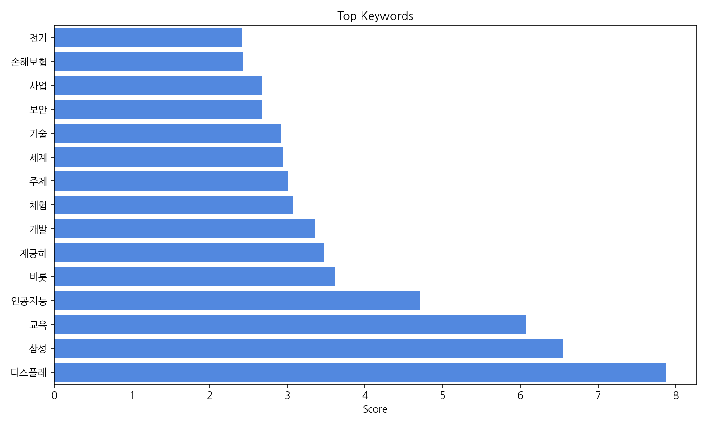
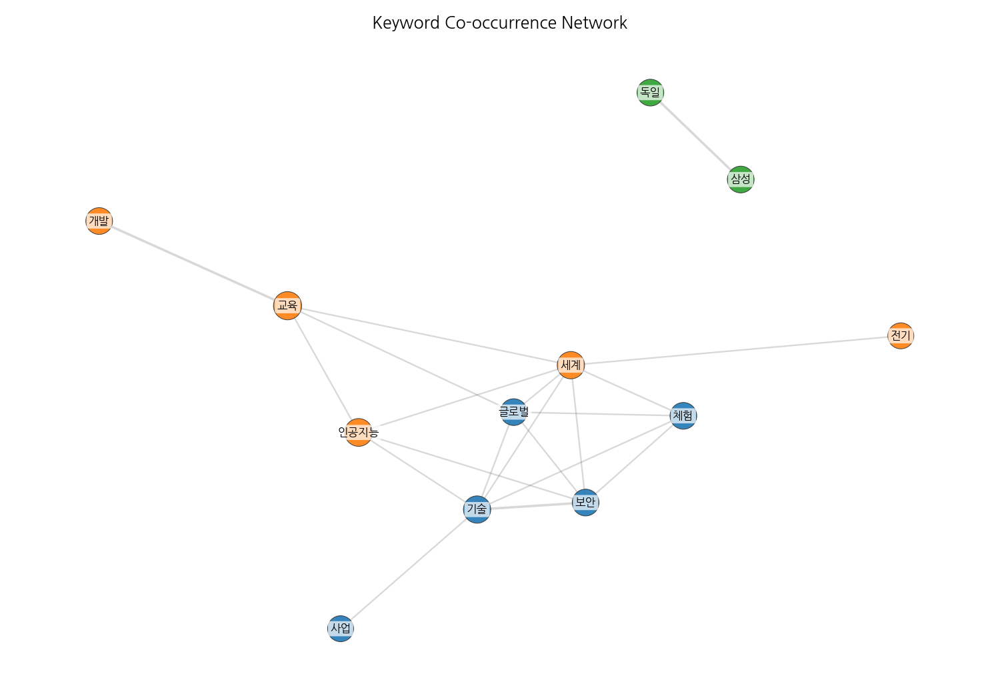
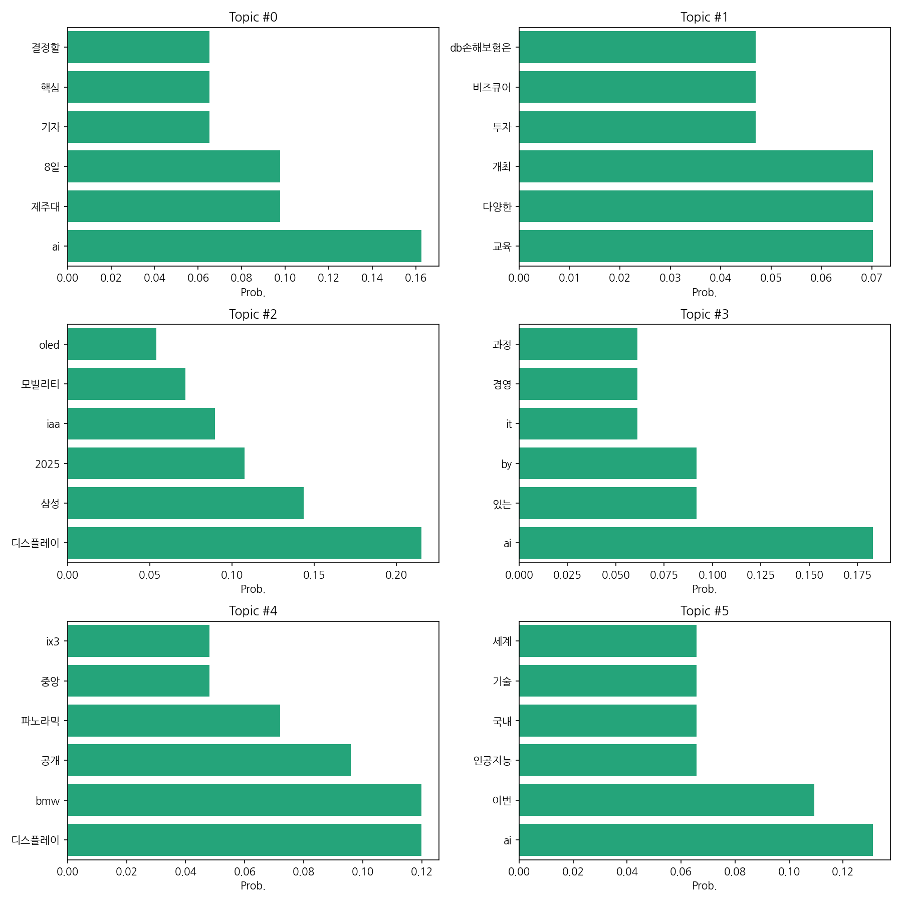
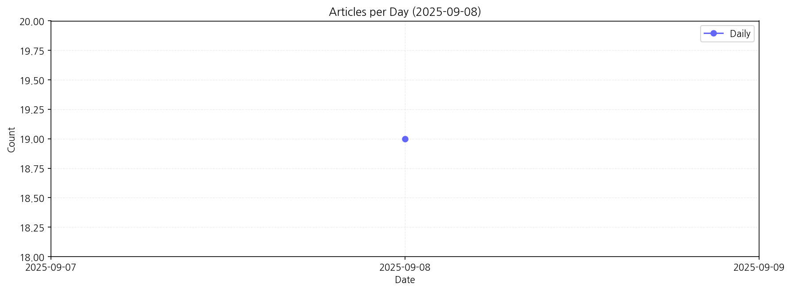

제공된 데이터를 바탕으로 한국어 뉴스 기사의 핵심 맥락을 분석해 보겠습니다.
핵심 맥락: 데이터는 크게 세 가지 주제로 묶을 수 있습니다. 첫째, AI 기술 관련 기사가 다수를 차지하며, 제주대학교 관련 행사 및 AI 기술의 경영/산업 적용에 대한 내용이 주를 이룹니다. 둘째, 삼성을 비롯한 기업의 디스플레이 기술 및 모빌리티 분야의 최신 동향과 관련된 기사들이 눈에 띕니다. 특히, IAA 모빌리티 쇼에서 공개된 새로운 기술과 제품에 대한 보도가 많습니다. 셋째, 교육 및 투자 관련 기사들이 있으며, 특정 기업의 교육 사업 지원 및 다양한 교육 프로그램 개최 소식을 다룹니다. 이 세 가지 주제는 한국의 기술 발전과 산업 동향을 반영하고 있습니다.
최근 변화/스파이크: 2025년 9월 8일 하루에 19건의 기사가 집중적으로 발생했습니다. 이는 특정 행사 또는 뉴스 이벤트로 인해 AI, 디스플레이, 모빌리티 관련 뉴스가 급증했음을 시사합니다. 이는 특정 시점에 집중된 이슈가 있었음을 보여주는 강력한 신호입니다.
실무 인사이트:
AI 기술 동향 모니터링 강화: AI 관련 기사의 빈도와 내용을 면밀히 분석하여, 국내외 AI 기술 발전 동향과 산업 적용 사례를 파악하고, 자사 사업 전략에 반영해야 합니다. 특히, 제주대학교 관련 행사 내용을 분석하여 시장의 흐름을 예측할 수 있습니다.
| Rank | Keyword | Score |
|---|---|---|
| 1 | 디스플레 | 7.871 |
| 2 | 삼성 | 6.547 |
| 3 | 교육 | 6.07 |
| 4 | 인공지능 | 4.715 |
| 5 | 비롯 | 3.613 |
| 6 | 제공하 | 3.47 |
| 7 | 개발 | 3.352 |
| 8 | 체험 | 3.072 |
| 9 | 주제 | 3.011 |
| 10 | 세계 | 2.946 |
| 11 | 기술 | 2.919 |
| 12 | 보안 | 2.673 |
| 13 | 사업 | 2.672 |
| 14 | 손해보험 | 2.433 |
| 15 | 전기 | 2.411 |




제공된 데이터를 바탕으로 한국어 뉴스 기사의 핵심 맥락을 분석해 보겠습니다.
핵심 맥락: 데이터는 크게 세 가지 주제로 묶을 수 있습니다. 첫째, AI 기술 관련 기사가 다수를 차지하며, 제주대학교 관련 행사 및 AI 기술의 경영/산업 적용에 대한 내용이 주를 이룹니다. 둘째, 삼성을 비롯한 기업의 디스플레이 기술 및 모빌리티 분야의 최신 동향과 관련된 기사들이 눈에 띕니다. 특히, IAA 모빌리티 쇼에서 공개된 새로운 기술과 제품에 대한 보도가 많습니다. 셋째, 교육 및 투자 관련 기사들이 있으며, 특정 기업의 교육 사업 지원 및 다양한 교육 프로그램 개최 소식을 다룹니다. 이 세 가지 주제는 한국의 기술 발전과 산업 동향을 반영하고 있습니다.
최근 변화/스파이크: 2025년 9월 8일 하루에 19건의 기사가 집중적으로 발생했습니다. 이는 특정 행사 또는 뉴스 이벤트로 인해 AI, 디스플레이, 모빌리티 관련 뉴스가 급증했음을 시사합니다. 이는 특정 시점에 집중된 이슈가 있었음을 보여주는 강력한 신호입니다.
실무 인사이트:
AI 기술 동향 모니터링 강화: AI 관련 기사의 빈도와 내용을 면밀히 분석하여, 국내외 AI 기술 발전 동향과 산업 적용 사례를 파악하고, 자사 사업 전략에 반영해야 합니다. 특히, 제주대학교 관련 행사 내용을 분석하여 시장의 흐름을 예측할 수 있습니다.
| Idea | Target | Value Prop | Score |
|---|---|---|---|
| AI 기반 뉴스 맥락 분석 및 예측 서비스 | 대기업 전략기획팀, 시장조사 기관, 투자사, 기술 기업의 R&D 부서 (직원 수 100명 이상) | AI 기반으로 뉴스 기사의 핵심 맥락을 분석하고, 특정 키워드 및 이슈에 대한 미래 예측을 제공합니다. 경쟁사 대비 정확도 높은 맥락 분석과 시각화된 결과 제공으로 의사결정 속도를 높입니다. 특히, 급변하는 기술 트렌드에 대한 선제적 대응 전략 수립을 지원합니다. | 4.5 |
| 모빌리티 산업 특화 뉴스 분석 플랫폼 | 자동차 제조사, 부품 공급업체, 모빌리티 서비스 기업 (직원 수 50명 이상) | IAA 모빌리티 쇼 등 주요 행사 정보와 기술 트렌드를 중심으로 모빌리티 산업 뉴스를 분석하고, 경쟁사 동향 및 시장 기회를 파악할 수 있도록 지원합니다. 다양한 시각화 도구를 통해 정보를 효율적으로 전달하여, 의사결정 속도를 높입니다. | 4.0 |
| AI 기반 디스플레이 기술 동향 분석 서비스 | 디스플레이 제조사, 관련 부품 업체, 연구소 (직원 수 30명 이상) | AI 기반으로 디스플레이 기술 관련 뉴스와 특허 정보를 분석하여, 핵심 기술 동향과 경쟁사의 기술 개발 현황을 파악할 수 있도록 지원합니다. 시장 경쟁력 강화를 위한 전략 수립에 필요한 정보를 제공합니다. | 3.8 |
| 맞춤형 AI 교육 플랫폼 개발 | 중견·대기업 교육 담당 부서, AI 관련 교육 기관 (직원 수 50명 이상) | 기업의 특수한 요구사항에 맞춰 AI 교육 커리큘럼을 설계하고, AI 기반 학습 플랫폼을 제공합니다. 개인별 학습 수준과 진도에 맞춘 맞춤형 학습을 지원하여, 학습 효과를 극대화합니다. | 3.5 |
| 기술 트렌드 기반 투자 컨설팅 서비스 | 벤처캐피탈, 엔젤 투자자, 개인 투자자 (자산 규모 10억원 이상) | AI, 디스플레이, 모빌리티 등 유망 기술 분야에 대한 심층 분석과 미래 예측을 바탕으로, 투자 전략 수립을 지원합니다. 데이터 기반의 정확한 시장 분석과 투자 포트폴리오 관리를 통해, 투자 수익률을 극대화합니다. | 3.2 |